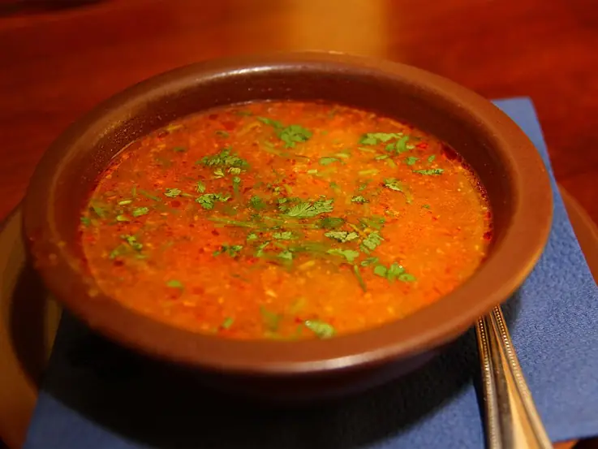

Фото: A.Savin, CC BY-SA 3.0

Суп харчо
Густой грузинский суп из говядины с рисом, орехами, чесноком и кинзой
120 мин6 порц.345 ккал на порциюБ 23 · Ж 19 · У 21Кавказская кухня
Продукты на 6 порц.
- Говядина600 г
- Вода2,5 л
- Рис0,5 стак.
- Лук репчатый3 шт
- Томатная паста2 ст. л.
- Грецкие орехи60 г
- Чеснок4 зуб.
- Хмели-сунели1 ч. л.
- Лавровый лист2 шт
- Острый перец молотый по желанию1 щеп.
- Кинза1 пучок
- Соль2 ч. л.
- Перец чёрный молотый1 щеп.
Как готовить
- Говядину (лучше грудинку на кости) залейте холодной водой и доведите до кипения на сильном огне. Снимите пену.
- Убавьте огонь до слабого и варите 1,5 часа, пока мясо не станет мягким.
- Выньте мясо, отделите от кости, нарежьте кусочками и верните в бульон.
- Добавьте мелко порубленный лук и промытый рис, варите 15 минут на среднем огне.
- Орехи измельчите в крошку. Добавьте в суп томатную пасту, орехи, хмели-сунели, лавровый лист, острый перец и соль. Варите 5 минут.
- Всыпьте раздавленный чеснок и рубленую кинзу, выключите огонь и дайте настояться под крышкой 10 минут.
Совет. В классическом харчо кислоту дают соус ткемали или сушёная алыча. Если они есть, добавьте 3-4 ст. л. ткемали вместо половины томатной пасты, вкус будет настоящим.